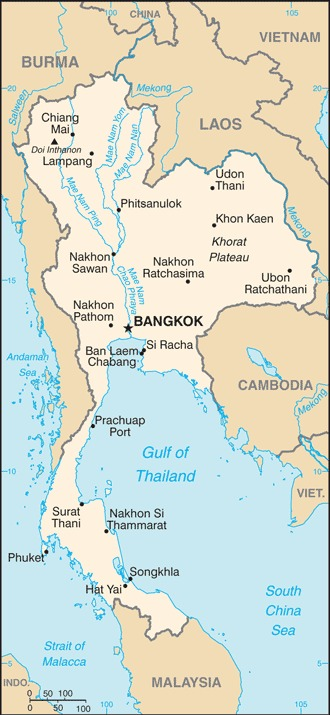

Genel Bilgiler
Tayland, Güneydoğu Asya’da yer alan anayasal monarşi ile yönetilen bir ülkedir. Başkenti Bangkok’tur. Yaklaşık 70 milyon nüfusa sahiptir. Resmî dili Tayca’dır ve para birimi Tayland Bahtı (THB)’dır. Tayland, ASEAN üyesi olup kültürel çeşitliliği, Budist mirası ve turizmi ile tanınır.
Tayland, kuzeyde Laos ve Myanmar, doğuda Laos ve Kamboçya, güneyde Malezya ile çevrilidir; batısı Andaman Denizi, doğusu Tayland Körfezi’ne kıyısı vardır. Yüzölçümü yaklaşık 513.120 km²’dir. Ülke coğrafyası kuzeyde dağlık, merkezi bölgelerde düz ovalar ve güneyde yarımada ve adalardan oluşur. Önemli nehirleri Chao Phraya ve Mekong’un bir kısmıdır.
Başkent: Bangkok
Kıta: Asya
Yüzölçümü: 513.120 km²
Nüfus (2025): 70.000.000
Bayrak Anlamı: Tayland bayrağı yatay beş eşit şeritten oluşur: kırmızı, beyaz, mavi (orta), beyaz ve kırmızı. Kırmızı ulusun gücünü ve halkı, beyaz din ve saflığı, mavi monarşiyi ve ülkenin birliğini simgeler. Bayrak 1917 yılında resmî olarak kabul edilmiştir.
Tayland Haritası
Ekonomi
Tayland ekonomisi ihracata dayalı ve gelişmekte olan bir yapıya sahiptir. Tarım, sanayi ve hizmet sektörleri ekonomide önemli rol oynar. Tarımda pirinç, mısır, şeker kamışı ve tropik meyve üretimi öne çıkar. Sanayi alanında otomotiv, elektronik ve tekstil sektörü güçlüdür. Hizmet sektörü turizm, finans ve lojistik alanlarında büyüktür ve ülke ekonomisinin temelini oluşturur.
| Yıl | İhracat (Milyar $) | İthalat (Milyar $) |
|---|---|---|
| 2019 | 245 | 234 |
| 2020 | 203 | 210 |
| 2021 | 260 | 250 |
| 2022 | 300 | 290 |
| 2023 | 310 | 300 |